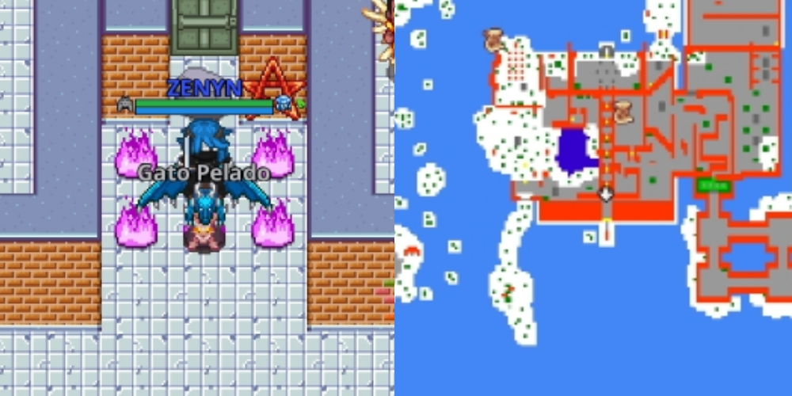
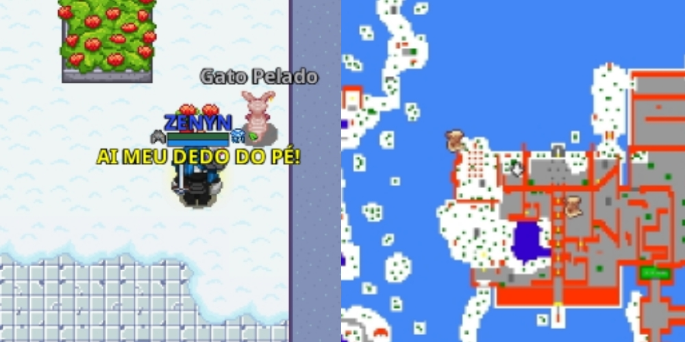
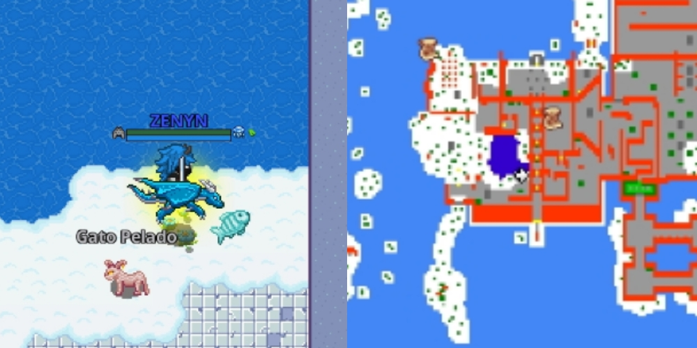
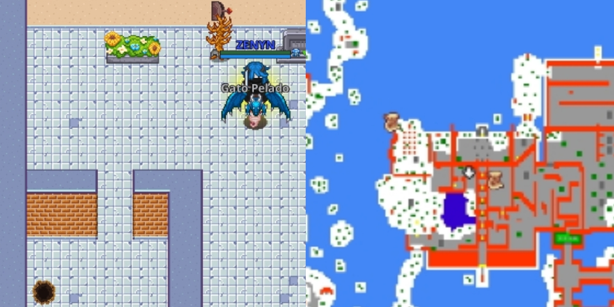
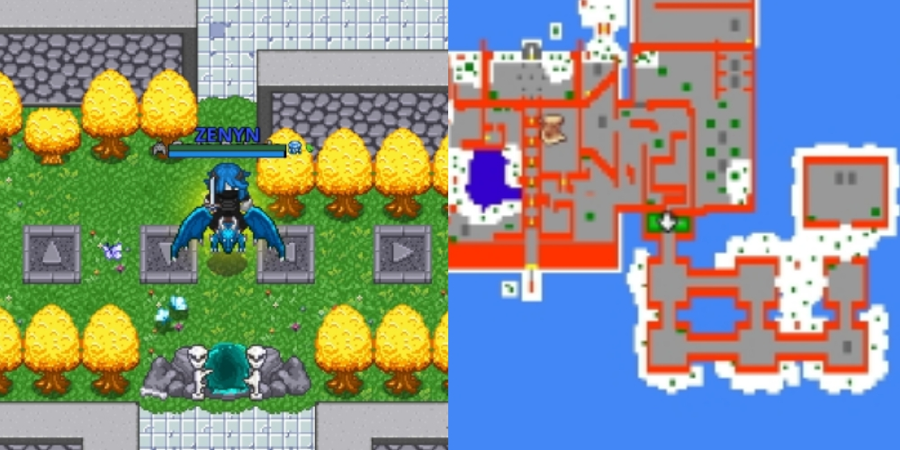
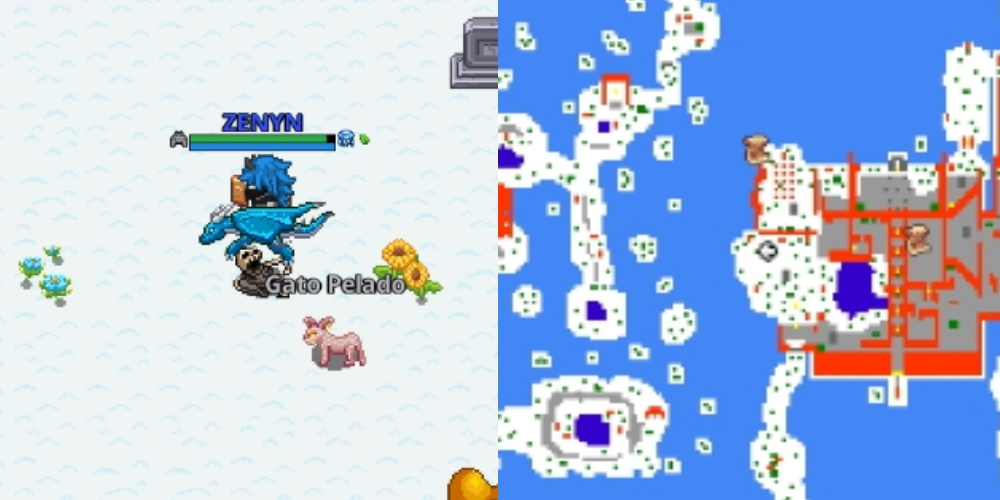
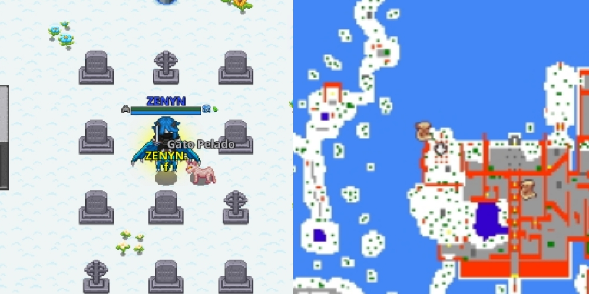

O acesso à sala do primeiro oráculo é totalmente livre — basta ir até a localização "365,965,3", e clicar no pentagrama para ser teleportado.

Para acessar a sala do segundo oráculo, equipe uma bota com biqueira de aço e quebre a pedra bloqueando a passagem. Após atravessar a porta, clique no pentagrama para prosseguir.
Para acessar a sala do terceiro oráculo, vá até a localização exata "351,926,3", onde uma mensagem será exibida: "AI MEU DEDO DO PÉ!". Em seguida, retorne até as portas e clique no pentagrama correspondente para entrar.

Para acessar a sala do quarto oráculo, primeiro vá até a localização "360,958,3", pesque um Peixe do Céu e use-o.

Em seguida, após ser teleportado, encontre a alavanca escondida atrás da árvore, puxe-a e saia pelo buraco. Em seguida, retorne até as portas e clique no pentagrama correspondente para entrar.

Para acessar a sala do quinto oráculo, vá até a localização "399,962,3". Lá, pise nos switches seguindo esta sequência: cima, cima, baixo, baixo, esquerda, direita, esquerda, direita. Em seguida, retorne até as portas e clique no pentagrama correspondente para entrar.

Para acessar a sala do sexto oráculo, vá até a localização exata "332,942,3" e aguarde até que a mensagem "clique." apareça sobre sua cabeça. Em seguida, retorne até as portas e clique no pentagrama correspondente para entrar.

Por fim, para acessar a sala final do oráculo, vá até a localização exata "336,923,3", digite "f" e aguarde até que a mensagem "clique." apareça sobre sua cabeça. Em seguida, retorne até as portas e clique no último pentagrama para entrar.
